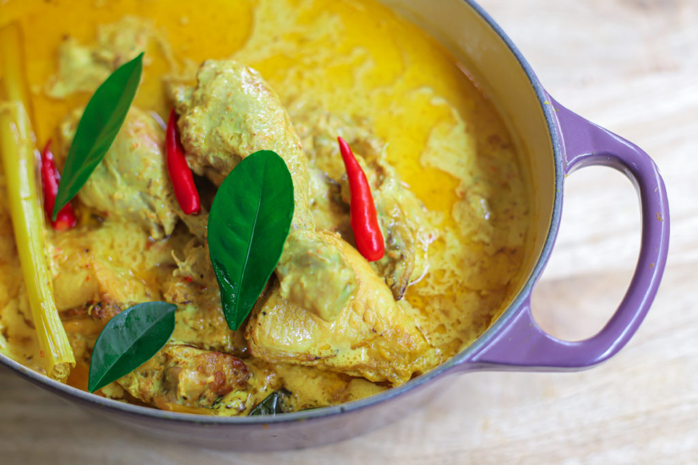

Lemak Cili Padi
Apa khabar semua! Hari ini kami akan memasak lemak cili padi. PERGHHHH!
Inilah gambar dia. Fuhhh lazat sungguh!

Lemak cili padi is essentially a staple in Malay cooking. It is my all time favourite dish. Sedap gila.
Here is a list of the ingredients ye.
For the chicken:
- 1 kg chicken portions
- 3 garlic, grated
- 2 cm ginger, grated
- ½ tsp turmeric powder
- ½ tsp salt
- ⅓ cup oil (If shallow frying)
- 1 tbsp oil (If using air fryer)
For the gravy, ingredients blended till fine
- 1 large red onion
- 5 cloves of garlic
- 10 green bird’s eye chillies (use less or omit if you can't handle the heat)
- 5 fresh red chillies
- 2 cm fresh turmeric OR ½ tsp turmeric powder
- 1 stalk lemongrass, sliced
Other ingredients
- 400 ml thick coconut milk/cream
- 300 ml of water
- 5 kaffir lime leaves (optional)
- 1 stalk lemongrass, crushed lightly
- 1 cm galangal, sliced (optional)
- 3 tbsp oil
- Salt to taste
For the salad
- 2 cucumbers (julienned or spiralized)
- 2 carrots (julienned or spiralized)
- 1 small onion, diced
- 1 garlic, minced
- 1 tbsp sugar
- 2 tbsp vinegar
- Salt to taste
- 1 tbsp chopped cilantro/mint
Cooking instructions
- Coat the chicken pieces with the garlic, ginger, turmeric and salt. Fry or air fry as preferred.
- In a pot, place 3 tbsp of oil and saute the blended ingredients, galangal and crushed lemongrass for about 10 minutes OR till fragrant.
- Add the browned chicken pieces and the kaffir lime leaves, if using.
- Cover and cook for about 5 minutes.
- Add the coconut milk, water and salt and cook for another 10-15 minutes or until the chicken pieces are fully cooked.
For the salad
Jemput MAKAN!
Recipe adapted from here.
Originally written by author Maya Kitchenette.